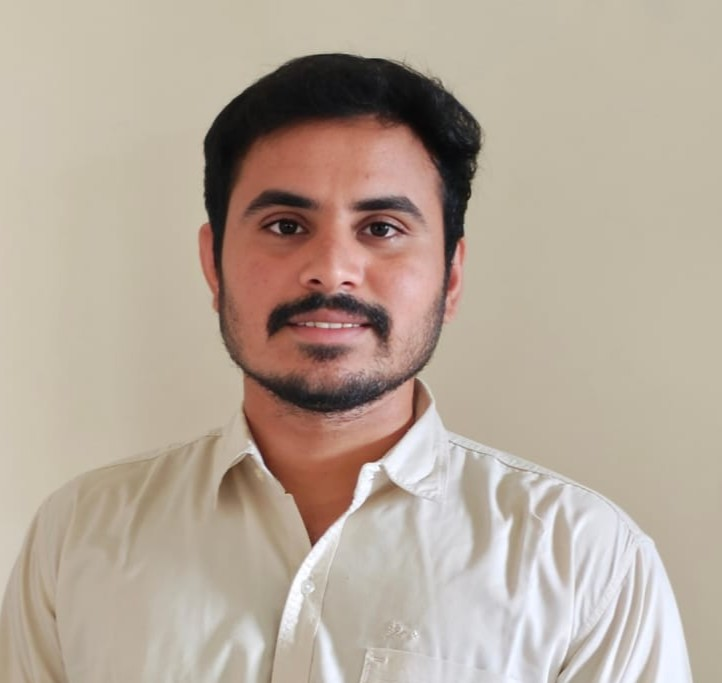

Cloud · AWS
Cloud services, networking and managed infrastructure foundations.
EC2VPCS3IAMEKSECRRDSALBCloudWatch
Hey, I'm Raju Challa — an AWS & DevOps enthusiast focused on cloud infrastructure, automation, container platforms, secure CI/CD and reliable delivery. I keep learning by building, breaking, fixing and improving.

My goal is to turn technical curiosity into practical cloud engineering skills and thoughtfully designed systems.
Cloud infrastructure, automation, container orchestration and observability—building blocks for modern engineering teams.
I enjoy exploring how cloud services, containers, infrastructure-as-code and CI/CD come together to deliver applications. I continuously strengthen my technical depth and practise explaining the why behind architecture and tooling—not only the commands.
My learning process is hands-on: build a workflow, understand each component, test failure scenarios, troubleshoot and document what I discover. I'm excited by new challenges and open to discussing technical concepts across the DevOps ecosystem.
A toolkit spanning cloud foundations, delivery automation, containers, security and observability.
Cloud services, networking and managed infrastructure foundations.
Provision and manage infrastructure through version-controlled automation.
Container packaging, orchestration and declarative deployment workflows.
Automated builds, quality checks, security scanning and delivery.
Monitoring, dashboards, metrics, alerts and operational visibility.
Operating systems, command line, scripting and troubleshooting.
Reliable, repeatable deployments with versioning and rollback awareness.
Learning deeply, staying curious and continuously improving technical skills.
Hands-on project concepts that demonstrate how cloud, automation and platform tools fit together.
Pipeline design covering source triggers, build stages, quality and security checks, container image publishing and deployment.
Webhook-triggered flow → build and test → quality gate → vulnerability scan → image push to ECR → Kubernetes deployment → validate rollout. Includes pipeline stages and failure gates.
Reusable infrastructure patterns for network, compute, load balancing and managed database components.
Modular Terraform structure, environment separation, remote state considerations and a VPC design with public/private subnets, ALB, scalable compute and database layer.
Monitoring Kubernetes workloads with metrics collection, dashboard visualization and alerting.
Helm-based deployment, Prometheus metrics discovery, Grafana dashboards for workloads and cluster health, alert rules and troubleshooting with metric signals.
Understanding the system end-to-end is what turns tool familiarity into engineering confidence.
Clarify the problem, requirements, constraints and the outcome that matters.
Map components, data flow, security boundaries and trade-offs before building.
Automate, validate, troubleshoot and test failure scenarios—not just happy paths.
Document lessons, strengthen fundamentals and refine the solution continuously.
Open to conversations about AWS, DevOps, cloud infrastructure, automation and new technical challenges. Let's exchange ideas.